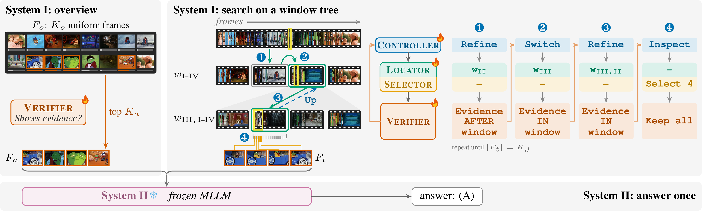
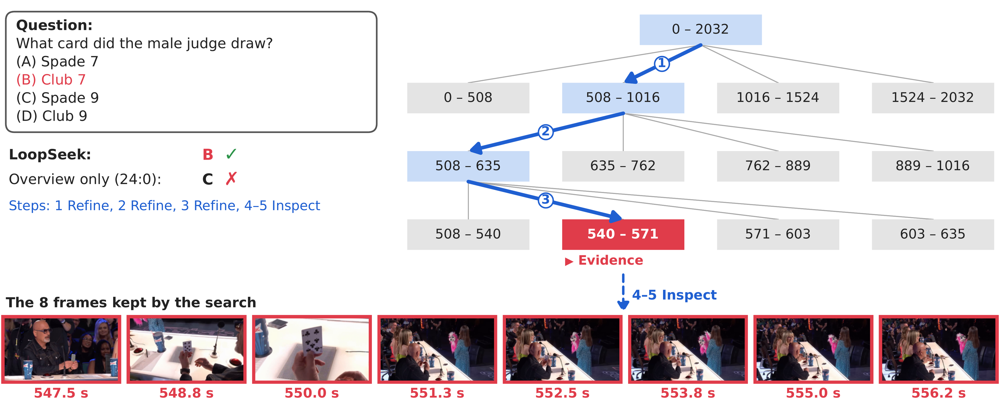
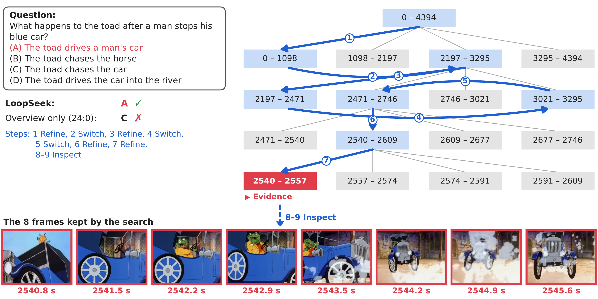
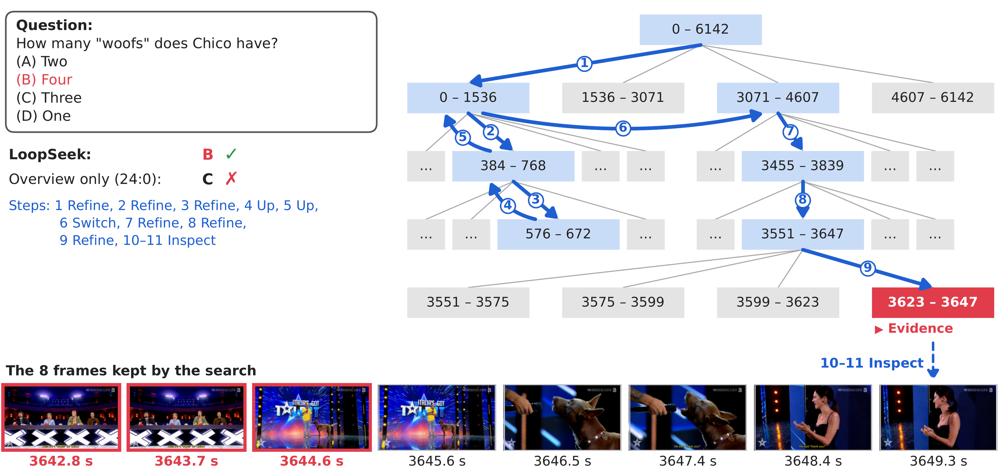

Abstract
Long video question answering requires finding relevant evidence before reasoning over it. With a limited frame budget, single-pass frame selection can miss critical evidence, while adaptive search often relies on repeated text generation to decide where to look. We introduce LoopSeek, a framework that decouples evidence search from answer generation through a division of labor between a non-thinking System I and a generative System II. Our key insight is that search can be expressed as a sequence of small, typed decisions, allowing System I to find the evidence that System II needs. Four System I role agents navigate a tree of video windows and coordinate through probability outputs to select frames, assess evidence, and revise the search without generating text. To align search with System II, System I learns from annotated evidence on questions that System II answers correctly only from that evidence, and the Verifier’s evidence estimates steer the search without calling System II, which stays frozen and answers once from the selected frames. On five long-video benchmarks, with a frozen Qwen3-VL-8B reading 32 frames, LoopSeek improves average accuracy from 53.5 to 63.9 over the uniform baseline and takes 32–80% less GPU time per question than agentic methods.
How LoopSeek Searches

Static figure from the paper (Fig. 2)
LoopSeek consists of System I, which searches the video and gathers the evidence for the question, and System II, a frozen answerer that answers once from the gathered frames. System I has four role agents. The Controller plans the search, the Locator and Selector ground it, and the Verifier checks what has been found. Each agent answers a typed question by picking the most likely option, so no decision generates text.
The video is a tree of windows: the root is the whole video, and every window splits into equal children. The search always begins with Refine and stops when the kept frames reach the budget, the action budget runs out, or no action is legal. At each step the Controller picks one of four actions:
Refine
The Locator picks the next window among the unvisited children of the active window.
Switch
The Locator picks the next window among the unvisited siblings of the active window.
Up
The search returns to the parent of the active window.
Inspect
The Selector picks frames in the active window, and the Verifier keeps those that show the evidence.
Learning from an evidence expert. Since System I never invokes System II during search, it must learn to locate what System II needs from the evidence alone. Following VTS, training uses questions that System II answers correctly from frames inside the annotated evidence, but not from the question alone or from frames outside it. All labels come from that evidence: the Locator, Selector, and Verifier are labeled directly from it, and the Controller imitates an expert that has access to it.
System I makes an average of 16.7 decisions per question, each requiring only one forward pass through a 4B-parameter model without text generation, while System II is invoked only once for answering.
Results
Accuracy (%) grouped by answerer
| Method | Frames | V-MME | MLVU | LVBench | LongVB | CG | Avg. |
|---|---|---|---|---|---|---|---|
| Uniform† | 32 | 63.9 | 63.7 | 39.1 | 60.4 | 40.7 | 53.5 |
| ReFoCUS† | 32 | 68.5 | 72.5 | 49.3 | 63.3 | 48.1 | 60.3 |
| VideoITG† | 32 | 68.9 | 75.8 | 53.5 | 63.6 | 47.3 | 61.8 |
| ReMem† | 32 | 68.8 | 77.6 | 53.3 | 64.4 | – | – |
| SVAgent | ≤32 | 63.1 | – | 40.8 | 61.0 | – | – |
| RACER | 32 | 67.9 | 73.5 | – | 64.0 | – | – |
| LoopSeek (ours) | 32 | 68.9 | 77.7 | 54.0 | 67.5 | 51.4 | 63.9 |
| Method | Frames | V-MME | MLVU | LVBench | LongVB | CG | Avg. |
|---|---|---|---|---|---|---|---|
| Uniform† | 32 | 62.4 | 60.8 | 37.8 | 57.9 | 35.4 | 50.9 |
| T* | 32 | 56.3 | 58.1 | 37.7 | 57.4 | 35.8 | 49.1 |
| A.I.R. | ≤32 | 65.0 | 67.5 | 42.3 | 61.4 | 44.6 | 56.2 |
| VideoMind | ≤32 | 60.7 | 64.7 | 45.2 | 57.6 | 39.4 | 53.5 |
| Video-MTR◊ | ≤32 | 59.0 | 58.0 | 38.2 | 52.3 | 33.7 | 48.3 |
| Conan-7B◊ | 32 | 60.5 | 61.6 | 39.2 | 56.6 | 39.1 | 51.4 |
| SVAgent | ≤32 | 61.2 | – | 40.6 | 60.7 | – | – |
| LoopSeek (ours) | 32 | 64.7 | 69.2 | 49.7 | 65.3 | 47.3 | 59.3 |
| Method | Frames | V-MME | MLVU | LVBench | LongVB | CG | Avg. |
|---|---|---|---|---|---|---|---|
| Uniform† | 32 | 58.0 | 60.3 | 39.3 | 55.3 | 32.2 | 49.0 |
| FOCUS† | 32 | 59.7 | 65.4 | 47.5 | 62.3 | 38.9 | 54.8 |
| A.I.R. | ≤32 | 60.0 | 66.6 | 45.6 | 58.9 | 42.0 | 54.6 |
| VideoMiner | 32 | 58.4 | 65.1 | – | 56.4 | – | – |
| VideoMind | ≤32 | 58.0 | 62.7 | 40.8 | 56.3 | 38.4 | 51.2 |
| LoopSeek (ours) | 32 | 63.6 | 70.5 | 49.1 | 62.7 | 45.7 | 58.3 |
| Method | Frames | V-MME | MLVU | LVBench | LongVB | CG | Avg. |
|---|---|---|---|---|---|---|---|
| Uniform† | 32 | 58.4 | 63.1 | 39.3 | 56.5 | 31.4 | 49.8 |
| BOLT† | 32 | 59.9 | 66.8 | 42.7 | 59.6 | 35.6 | 52.9 |
| FOCUS† | 32 | 58.3 | 64.9 | 45.9 | 60.7 | 35.1 | 53.0 |
| ReFoCUS† | 32 | 62.6 | 68.5 | 45.8 | 61.0 | 37.6 | 55.1 |
| A.I.R. | ≤32 | 61.4 | 69.3 | 45.1 | 60.7 | 37.1 | 54.7 |
| LoopSeek (ours) | 32 | 62.3 | 70.6 | 47.6 | 62.2 | 38.7 | 56.3 |
| Method | Frames | V-MME | MLVU | LVBench | LongVB | CG | Avg. |
|---|---|---|---|---|---|---|---|
| Uniform† | 32 | 64.9 | 68.8 | 43.9 | 58.7 | 42.7 | 55.8 |
| ReFoCUS† | 32 | 67.0 | 72.7 | 50.0 | 62.0 | 48.1 | 60.0 |
| A.I.R. | ≤32 | 68.2 | 74.5 | 50.3 | 62.8 | 47.9 | 60.7 |
| VideoMind | ≤32 | 64.2 | 66.5 | 42.3 | 59.7 | 43.0 | 55.1 |
| LoopSeek (ours) | 32 | 65.4 | 74.1 | 51.0 | 64.3 | 50.1 | 61.0 |
Each table is one answerer (named above it), which answers from the frames that each method in its table selects. †Picks frames in a single pass; unmarked methods search over multiple rounds, iteratively or as agents. Frames: number of frames that the answerer reads. Avg.: mean of the five benchmarks. V-MME: Video-MME; LongVB: LongVideoBench; CG: CG-Bench. –: not reported in the paper, and the code or weights are not released. ReMem parses the question with GPT-4o. ◊Answers with a model fine-tuned from the answerer. Bold: best in table, ties included; underline: second best.
GPU seconds per question
| Method | MLVU | LVBench | ||
|---|---|---|---|---|
| Search | Total | Search | Total | |
| LoopSeek (ours) | 2.59 | 3.41 | 3.35 | 3.96 |
| VideoMind-7B | 3.63 | 5.04 | 4.54 | 6.13 |
| VTS-8B | 9.98 | 11.16 | 18.73a | 19.92a |
| Conan-7B | – | 16.51 | – | 16.13 |
| ReFoCUS-1.3B | 4.42 | – | 4.38 | – |
One H200, batch size 1, the same 1000 questions per benchmark (a218). Search: work before the answer, with vision encoding. Total: search and answer.
Search Examples
Three searches on LVBench, whose time references give the annotated evidence. Each replay follows the actions of the Controller on the window tree: visited windows are blue, and the active window has a blue outline. The timeline shows where the active window lies in the video, with the annotated evidence in red; the search itself does not see it. After the inspections, the 8 kept frames appear (red border: inside the evidence), then the answers of System II with all 32 frames and with the 24 overview frames alone.
Direct narrowing (LVBench, uid 4600)
Three Refine actions narrow the 2,032 s video to a 32 s window that holds the evidence (547–560 s), and two inspections keep 8 frames, all inside it. Two of them show the card that the judge draws, the seven of clubs. With the overview frames alone, System II answers Spade 9.
Recovery with Switch (LVBench, uid 362)
The first window, 0–1098 s, holds no evidence, and the Controller switches to 2197–3295 s. The child that it then refines into holds no evidence either, and two more Switch actions lead to 2471–2746 s, which does. Two Refine actions then reach a 17 s window, and all 8 kept frames lie in the evidence (2531–2557 s); they show the toad driving the car. With the overview frames alone, System II answers that the toad chases the car.
Recovery with Up (LVBench, uid 4705)
Three Refine actions go down to 576–672 s, far from the evidence (3640–3645 s, 0.08% of the video). The Controller then takes two Up actions back to 0–1536 s and switches to 3071–4607 s, which holds the evidence; Switch alone moves only among the siblings of the active window and could not leave 384–768 s. Three Refine actions then reach a 24 s window, and two inspections keep 8 frames, 3 of them inside the evidence; two of these show the subtitle “Then it’s 4 ‘woofs’ for Chico!”. With the overview frames alone, System II answers Three.
Static figures from the paper (App. E)
Direct narrowing (LVBench, uid 4600)

Recovery with Switch (LVBench, uid 362)

Recovery with Up (LVBench, uid 4705)

BibTeX
@article{wang2026loopseek,
title = {LoopSeek: Decoupling System One Search from System Two Answering for Long Video Understanding},
author = {Wang, Chengzhong and Lin, Lang and Liu, Xinyang and Yin, Yueqin and Zhou, Mingyuan and An, Shengwei},
journal = {arXiv preprint arXiv:2611.28635},
year = {2026}
}